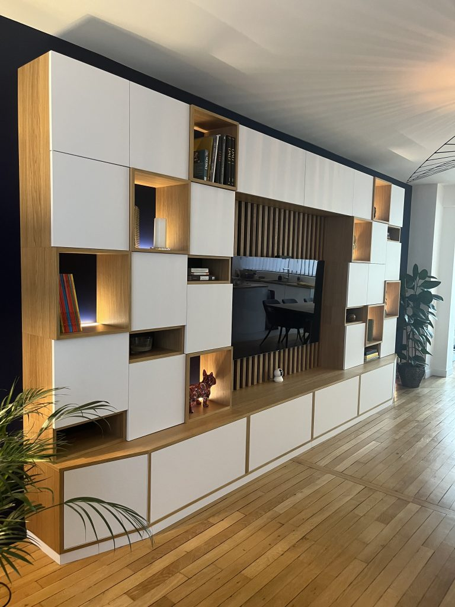
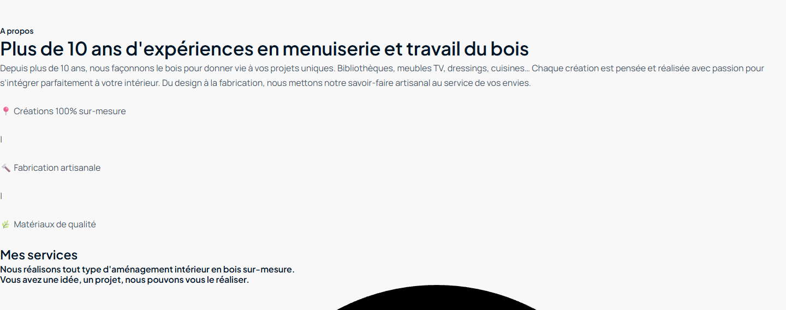
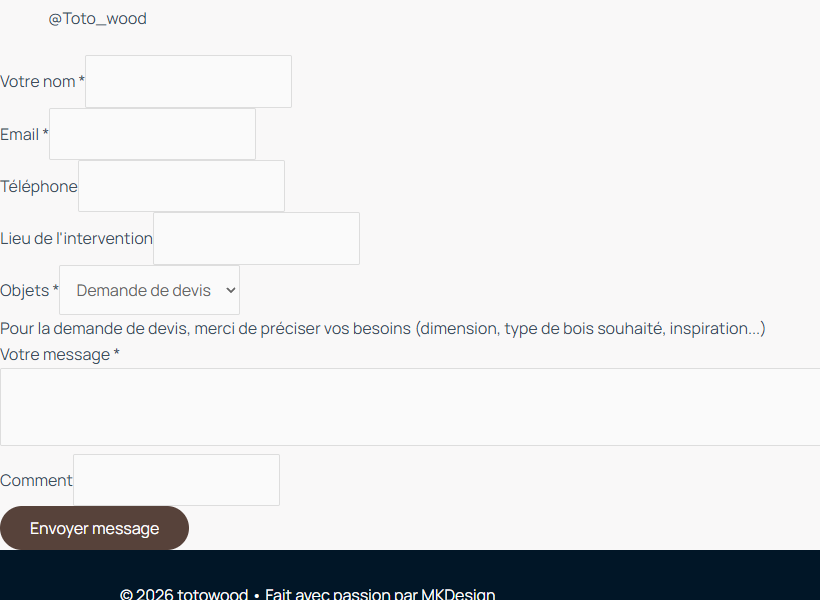

Un savoir-faire réel, avec un potentiel digital à structurer.
À préparer avant lancement
48 %niveau de préparation actuel ; le potentiel existe, mais le parcours doit être renforcé
500 €palier de test conseillé sur 90 expressions métier en Seine-et-Marne
6–16 leadsavec 315 clics au palier 500 € et 2–5 % de conversion, hypothèse NMF
Ce qui porte Totowood
Preuves tangibles : réalisations sur mesure, atelier et photos de projets réels.
Offre à forte valeur : conception, fabrication et pose de mobilier intérieur.
Réassurance humaine : 11 ans d’expérience annoncés et témoignages clients présents.
Ce qui doit être renforcé
Rendu visuel : stabiliser le logo, les médias et les éléments graphiques.
Conversion : rendre le téléphone, le devis et les preuves visibles dès le premier écran.
SEO local : enrichir les pages services, les metas et les signaux géographiques.
1 560 recherches/moiscouvertes par 90 expressions métier en Seine-et-Marne. Le volume vient de l’élargissement des services ciblés, pas de la zone géographique.
Recommandation NMF
Réparer et instrumenter le site avant tout trafic payant. Ensuite, lancer un test Search à 500 € en Seine-et-Marne, structuré par service, avec mots-clés négatifs et contrôle hebdomadaire des termes de recherche.
Volumes, clics et coûts : Google Ads API, Seine-et-Marne, 28 juillet 2026. 30 appels séparés : 3 stratégies × 10 paliers de 50 à 2 000 €. Taux de conversion : hypothèse NMF.
L’entreprise & son marché
Un atelier de proximité face à une concurrence structurée.
Annet-sur-Marne · 77410
Totowood conçoit, fabrique et pose des agencements intérieurs sur mesure pour particuliers et professionnels depuis son atelier de Seine-et-Marne.
Mobilier intégréDressing, bibliothèque, meuble TV, placard et rangements sous pente.
Pièces de vieCuisine, table, claustra et agencements d’escalier.
Service completConception, fabrication en atelier et pose sur site.
Zone Ads retenueSeine-et-Marne ; le volume est développé par les services ciblés, sans élargir la géographie.

Réalisation issue des médias publics de totowood.fr.
Présence publique vérifiée
Site : cinq pages principales accessibles et indexables.
Contact : adresse, email, téléphone, Instagram et formulaire disponibles.
LinkedIn : activité régulière et 313 abonnés visibles lors du relevé.
Avis : trois témoignages sur le site, mais sans lien vers une source externe vérifiable.
Google Business Profile : profil et note non vérifiés de manière indépendante pendant l’audit.
Concurrents visibles sur le territoire
Acteur
Positionnement public
Avantage visible
EDENE Agencement
Fabrication pour professionnels et prescripteurs
Pages locales et expertise B2B explicite
OL Menuiserie
Agencements sur mesure en Seine-et-Marne
Zone d’intervention affichée
BD Agencements
Résidentiel et professionnel, atelier dans le 77
Processus et couverture IDF détaillés
Grandes enseignes
Dressing, cuisine et placard configurables
Notoriété et forte pression sur les requêtes génériques
Angle différenciant à tenir
Ne pas se battre sur « meuble pas cher ». Vendre l’accompagnement complet, la fabrication d’atelier et l’adaptation aux contraintes réelles du logement.
Sources publiques : totowood.fr, page LinkedIn Totowood et résultats web locaux consultés les 27 et 28 juillet 2026.
Audit du site · preuve visuelle
Le savoir-faire existe. Le premier écran le masque.
Priorité immédiate
Capture réelle · contenu existant

Zone « À propos / Services » : le savoir-faire et les promesses existent, mais la mise en forme cassée les rend secondaires et peu valorisantes.
Capture réelle · formulaire

Le formulaire couvre nom, email, téléphone, lieu, objet et message : la base de conversion est bien présente.
Avant toute campagne
Le contenu et le formulaire constituent une bonne base. La priorité consiste à stabiliser le rendu, renforcer le premier écran et mesurer correctement les conversions avant d’acheter du trafic.
Conversion & SEO local
Une base saine, avec des optimisations prioritaires.
Métier + service + Seine-et-Marne, avec un title unique par page.
P1
Meta descriptions
Absentes sur les cinq pages analysées.
Promesse, zone, preuve et invitation au devis en 140–160 caractères.
P1
Hiérarchie Hn
Contact sans H1 ; plusieurs phrases longues utilisées comme titres H3/H4.
Un H1 descriptif par page puis une structure H2/H3 réellement éditoriale.
P1
Contenu services
98 mots : conception, fabrication et pose restent trop peu détaillées.
Créer une page par intention : dressing, bibliothèque, cuisine, mobilier intégré.
P0
Réalisations
Galerie riche mais seulement 46 mots et aucune fiche projet indexable.
Transformer chaque projet en étude de cas avec commune, besoin et matériaux.
P1
Données structurées
ImageGallery sur Réalisations ; aucun LocalBusiness ou Service.
Ajouter l’entreprise, l’adresse, les services et les avis seulement s’ils sont vérifiés.
P1
Réseaux sociaux
Un lien Instagram « http://test » apparaît dans le gabarit général.
Remplacer par le compte réel et vérifier tous les liens sortants.
P0
Le contact fonctionne.
Adresse, email, téléphone et Instagram sont publiés sur la page Contact.
Formulaire : nom, email, téléphone, lieu d’intervention, objet et message. La base est saine, mais elle gagnerait à accepter des photos et à afficher une confirmation claire. Le téléphone doit aussi remonter dans le header et rester cliquable sur mobile.
Analyse HTML structurée, contrôle croisé dans le navigateur et vérification du code source. Aucun chiffre PageSpeed n’est avancé sans mesure fiable.
Étude de mots-clés · Google Ads API
Le volume est générique. La valeur est dans les requêtes rares.
77 · 90 mots-clés
15 830recherches visibles/mois dans l’univers étudié
580recherches/mois classées à intention commerciale
3,03 €CPC haut de page moyen des requêtes commerciales
Figure 1 — Répartition du marché par volume de recherche
Volumes ciblés Seine-et-Marne. « Agencement intérieur » utilise le CPC Île-de-France, faute de signal départemental suffisant.
Figure 2 — Inversion volume / valeur
L’insight clé
Un CPC élevé n’est pas un défaut : il signale qu’une demande vaut assez cher pour que les concurrents enchérissent.
À exclure dès le lancement : IKEA, Leroy Merlin, Lapeyre, Mobalpa, Mobibam, occasion, tuto, DIY, plan gratuit, emploi, formation et stage.
Source : Google Ads Keyword Planner, Seine-et-Marne, 28 juillet 2026. 2 539 idées brutes, 1 173 familles de requêtes distinctes après dédoublonnage.
Projection Google Ads
500 € : un test absorbable dans le 77.
Palier de test
Scénario
Stratégie
Dépense
Clics
CPC réel
Part volume
Leads*
Présence
Maximiser les clics
517 €
512
1,01 €
32,8 %
10–26
Haut de page
Enchère fixe 3,02 €
517 €
315
1,64 €
20,2 %
6–16
Domination
Enchère fixe 4,53 €
517 €
247
2,09 €
15,8 %
5–12
Figure 3A — Dépense au palier de 500 €
517 €Présence
517 €Haut page
517 €Domination
Figure 3B — Clics mensuels simulés
512Présence
315Haut page
247Domination
Figure 4 — Part du volume transformée en clics
Présence32,8 %
Haut de page20,2 %
Domination15,8 %
48 %niveau de préparation avant lancement
Demande locale18 / 25
Part d’intention commerciale4 / 20
CPC face à la valeur d’un projet15 / 20
Qualité de la landing page5 / 25
Capacité à traiter les leads6 / 10
Test recommandé : Haut de page, 500 € demandés
Google normalise le budget journalier en 517 € mensuels et prévoit 315 clics. À 2–5 % de conversion, cela représente 6–16 leads et un CPL entre 33 et 82 €. Le scénario Présence promet davantage de clics, mais expose plus fortement aux requêtes génériques : il ne devient pertinent qu’après validation des termes de recherche.
Volumes, dépenses, clics et CPC : Google Ads API, Seine-et-Marne, 28 juillet 2026. Palier affiché : 500 € demandés. * Leads et CPL : hypothèse NMF de 2–5 %.
Preuve budgétaire complète
Le portefeuille métier libère le budget sans élargir la zone.
30 appels 0 erreur
517 €et 512 clics à 500 € demandés en scénario Présence
517 €et 315 clics à 500 € demandés en scénario Haut de page
517 €et 247 clics à 500 € demandés en scénario Domination
Figure 5 - Dépense Google selon le budget demandé en Seine-et-Marne
Présence - 2 067 € à 2kHaut de page - 1 258 € à 2kDomination - 1 875 € à 2k
Demandé
Présence € / clics
Haut page € / clics
Domination € / clics
50 €
52 / 148
52 / 32
52 / 25
100 €
103 / 219
103 / 63
103 / 49
150 €
155 / 274
155 / 95
155 / 74
200 €
207 / 320
207 / 126
207 / 99
300 €
310 / 393
310 / 189
310 / 148
500 €
517 / 512
517 / 315
517 / 247
750 €
775 / 619
775 / 473
775 / 371
1 000 €
1 033 / 705
1 033 / 630
1 033 / 494
1 500 €
1 550 / 836
1 258 / 768
1 550 / 741
2 000 €
2 067 / 926
1 258 / 768
1 875 / 897
Résultat : 500 € sont absorbables dans le 77 avec un portefeuille mieux couvert
Le portefeuille initial de 50 mots-clés plafonnait à 106 € et 23 clics en Présence. Avec 90 expressions contrôlées couvrant douze familles de services réelles, le même territoire prévoit 517 € et 512 clics au palier de test. Cette capacité technique ne justifie pas de démarrer au-delà : les termes de recherche et les leads doivent d’abord confirmer la qualité du volume.
Source : Google Ads generateKeywordForecastMetrics, Seine-et-Marne, 28 juillet 2026. Chaque cellule provient d’un appel API distinct ; 30 appels, 0 erreur. Aucun plafond n’est affirmé sans deux paliers supérieurs stables.
Plan d’action priorisé
Réparer la confiance, construire la demande, puis tester.
Ordre recommandé
Prérequis
Stabiliser le rendu
Corriger logo, SVG et médias ; purger les caches ; tester les cinq pages sur desktop et mobile ; ajuster TigerProtect sans supprimer la protection.
Conversion
Prérequis
Rendre le contact immédiat
Afficher téléphone cliquable et CTA devis dans le header ; conserver un seul CTA dominant ; ajouter les preuves près du formulaire.
Leads
Fondation
Créer les pages de service
Dressing, bibliothèque, cuisine et mobilier intégré : une page par intention, avec réalisations, matériaux, méthode et formulaire contextualisé.
SEO + Ads
Fondation
Renforcer le local
Optimiser title, meta, H1, LocalBusiness et Google Business Profile ; publier des études de cas par commune réellement desservie.
Visibilité
Mesure
Instrumenter les conversions
Mesurer appels, formulaires et demandes qualifiées ; enregistrer le service, la commune et la valeur estimée du projet.
Pilotage
Test
Lancer un micro-test Search
Ciblage strict Seine-et-Marne, groupes par service, expressions et exacts, négatifs dès le départ. Tester 500 €, puis étendre seulement si les termes de recherche et les leads restent qualifiés.
Validation
Le bon ordre évite de payer pour apprendre ce que le site montre déjà.
Totowood n’a pas besoin d’un budget publicitaire démesuré. L’entreprise a d’abord besoin d’un site qui transforme ses réalisations en confiance, puis d’un test local à 500 € mesuré sur la qualité réelle des demandes.
Échanger sur l’auditcontact@nmf-agence.com
Découvrir l’agencewww.nmf-agence.com
Périmètre proposéSite · SEO local · Google Ads
Audit fondé sur les contenus publics disponibles et les données Google Ads au 28 juillet 2026. Aucune promesse de résultat : la performance dépendra de la qualité du site corrigé, du suivi commercial et de la demande locale.